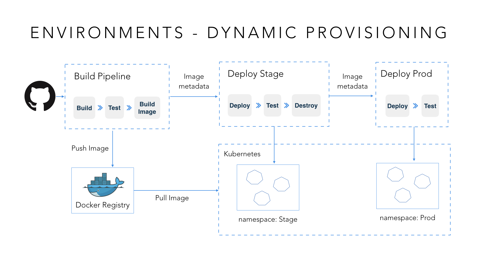

This is the fourth post in the series - CD of Microservices. In the previous post, we talked in depth about CI practices, in particular trunk based deployment and feature toggles. In this post, we’ll discuss environment strategy.
Environment plan
In some organizations people don’t realize the importance of an environment plan until they have too many environments and maintaining them becomes overwhelming.
An environment plan communicates the various environments that are involved in the path to production and their intended uses. It also communicates how your artifacts are promoted and the toggle states on these environments.
You can start with thinking about what environments need to be created upfront and talking about the intended use cases for these environments. Different groups in your organization will have different competing needs. Your environment plan should accommodate the needs from different parties.
Artifact promotion
Artifacts are one of many kinds of tangible by-products produced during the development of software. Some of these artifacts are text files like test and coverage reports. Some of these artifacts are binary artifacts like npm packages, jar files, and AMI machine images, which are built once and propagated along the CD pipelines for deployment in downstream environments.
CD pipelines generate a lot of artifacts. Before you know it, you're getting into terabytes, or tens of terabytes of generated artifacts. It's important to think through an artifact promotion strategy, which deals with where these artifacts are stored, how many are retained, and how you do clean-up.

The diagram above shows you an environment plan which factors in an artifact promotion strategy. From the plan you can see the environments that exist in the CD pipeline, with different colored arrows depicting different artifact promotion strategies. Early on in this pipeline, we generate artifacts that go to an artifact repository that has a more aggressive clean-up strategy, so we don't really retain too many of those environments. As you go further down this pipeline, artifacts are verified and more robust and you may want to keep these for a little longer, so you could keep them in a store with a different retention policy.
Dynamic environments
Environments are expensive and cumbersome to maintain. One way to make the process simpler and less expensive is to create environments on the fly. For example, when running functional tests, you can provision a functional test environment on demand, then clean it up right after your test is done.
To do this, you need use IaaC techniques to script all aspects of environment provisioning. Here are the benefits of doing this:
Parity with production If you create all environments dynamically based on automation, you will use exactly the same way to create testing and staging environments. The scale and nature of infrastructure may be different, but the footprint of the environment remains the same.
Prevent drift If you have manual processes and manual installations, you can't really ensure that two environments are the same. But using a script to create short-lived dynamic environments prevents drift.
Efficient use of hardware and infrastructure Only creating an environment when you need it and cleaning up dynamically optimizes utilization and saves infrastructure costs.
Technologies such as container schedulers are all the rage these days for deploying and running applications. The diagram below is an example of a Dock - a Docker based build workflow with Kubernetes.

The CI aspect of this pipeline, which is the build pipeline on the left, generates Docker images. The artifacts from this pipeline, which are Docker images, are stored in a Docker registry. Further downstream, deploy environments deploy directly to Kubernetes. You can leverage features of Kubernetes like its concept of labels to provision environments on the fly.
Summary
This is the part 4 of our CD of Microservices blog series. We have talked about environment strategy including artifact promotion and leveraging modern infrastructure for dynamic environments. In the next post, we will talk about the fourth consideration: configuration strategy.